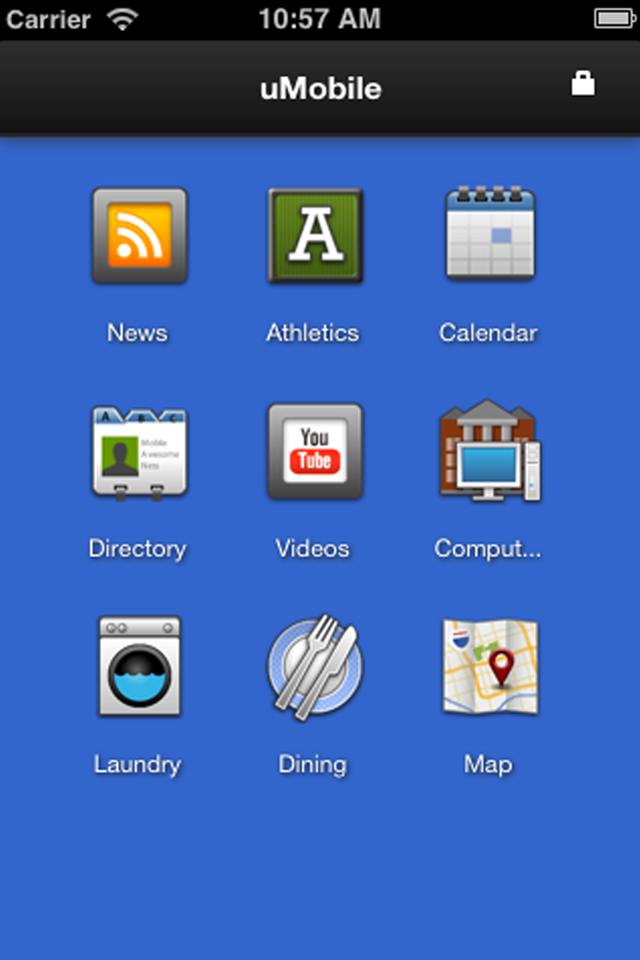
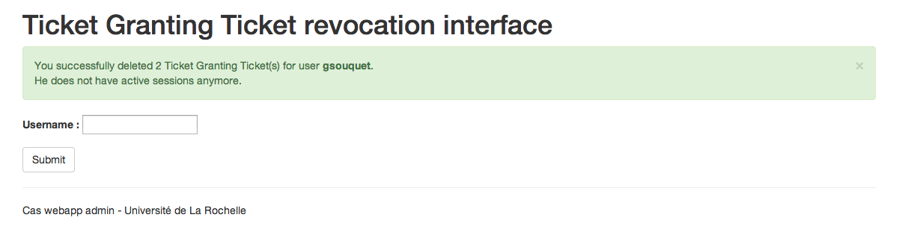

Atelier Authentification
CAS Addon : Token manager
Germain Souquet
Université de La Rochelle
Plan
- Objectifs du projet
- Usages
- uMobile
- Interfaces
- Fonctionnement
- Evolutions
Pourquoi ?
-
Emergence de l'accès via mobile
-
Le mobile est un object très personnel
-
Réduire la fréquence de saisie du mot de passe
-
Utiliser le serveur CAS depuis une application native / cross-platform
-
Il est important de pouvoir interdire l'accès à ces applications en cas de perte ou vol du terminal d'accès.
Objectifs du projet
- Lister les sessions actives d'un utilisateur
-
Connaitre des informations complémentaires sur l'authentification de l'utilisateur
-
Accès depuis une application mobile
-
Session longue duréee ou non, ...
- Révocation de sessions à distance
Les usages
-
Les informations concernant l'authentification
-
Emplacement de la connexion grâce à l'adresse IP
-
Navigateur / Système d'exploitation grâce au User-Agent
-
En discutant avec le RSSI :
-
Une interface administrateur pour supprimer toutes les sessions d'un utilisateur
uMobile

Développé par Jasig
-
Application cross-platform
-
uMobile Sever
-
Backbone.js
-
Handlebars
Application cliente : uMobile
L'interface administrateur

Technologies
- CAS 4.0+
- Spring Web MVC
- Spring Security
- LDAP
Servlet
-
https://localhost/cas/tokenManager
-
Accès pour les utilisateurs authentifiés
-
https://localhost/cas/tokenManager/admin
-
Accès pour les utilisateurs authentifiés
-
Avec une session courte
-
Avec un rôle administrateur
Infos supplémentaires
CAS propose des méthodes d'ajout de méta-données associées à une authentification
MetaDataPopulator
Méchanisme utilisé pour définir la durée de validité d'une session (Remember Me).
Et dans notre cas : le user-agent et l'adresse IP
Gestionnaire de tickets
TicketRegistry & CentralAuthenticationService
- Contient les Service Tickets et les Ticket Granting Ticket
- Possibilité d'invalider un ticket depuis son identifiant
- Aucune méthode pour faciliter les recherches d'un ticket dans le registry
Le TicketRegistry est totalement décoréllé du système de stockage de l'information : memcached, base de données, ...
Une V2 en approche
L'architecture actuelle nécessite un fort couplage avec le serveur CAS
Solution ? : exposer les données du TicketRegistry via un webservice
Toute la logique se trouve maintenant dans une autre application elle même cliente CAS.
Devs à venir
-
Création d'une portlet pour esup-uportal
-
Intégration avec memcached
Informations utiles
Tous les développements sont disponibles sur GitHub
Manuel d'installation pour CAS disponible sur le
Wiki
Merci pour votre attention
Questions ?